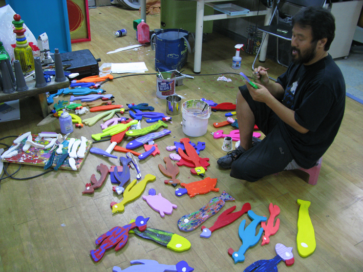
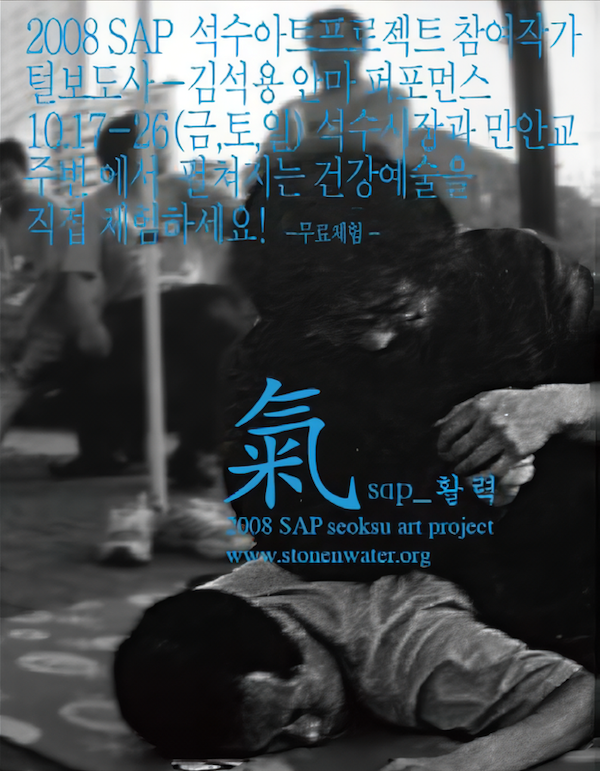
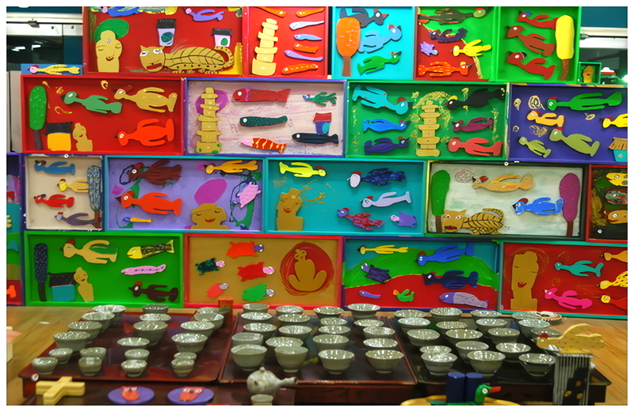

김석용은 도자기를 만들면서 평면작업을 하지만 그의 작업을 단순히 구분하기는 힘들다. 그는 전문 안마사이고 작가의 작업실과 같아 보이는 안마시술소를 운영하고 있다. 그는 그가 하는 마사지를 행위 혹은 건강예술이라고 생각하고 ‘천천히 살기’라는 예술속의 삶, 삶속의 예술이라는 이상적으로 사는 방식을 전달 하고자 한다.
Seokyong Kim makes ceramics and draws painting. However, it is hard to categorize his art works. He is a professional massage therapist and run a massage parlor that looks like an artist studio. He considers his massage as performance art or health art and wants to convey ideal way of life in art and art in life that is ‘slow life’ in his words.

* 느리게 살기: 안마 퍼포먼스와 차 마시기
2008 SAP 석수아트프로젝트 오픈페스티벌 기간 동안 석수시장과 만안교 주변에서 ‘건강예술’이 펼쳐진다. 우리에게 휴식은 천천히 사는 것이고 가던 길을 멈추는 것인데 페스티벌에 찾아온 관람객들과 함께하는 안마 퍼포먼스나 차 마시기는 ‘느리게 살기’라는 방식을 체험하려는 의도를 갖는다. 무엇보다도 차 마시기는 우리와 물의 관계가 밀접하다는 생각에서 미술과 물을 연결시키기 위한 것이다. 결국 ‘미술은 영혼의 건강이고 안마와 차 마시기는 몸의 건강이다.’ 이 프로그램에 참여한 사람들이 잠시나마 행복해 질 수 있다면 그것으로 충분하다.
* Living Slowly: Massage and Tea Performace
During the SeoksuArt Project opening festival a "Healthy Arts" event was held in Man-An Bridge. To us, leisure means living slowly and stopping for a moment for rest from time to time. The festival intended to let the visitors experience 'living slowly' through a massage performance and tea drinking event. Art is for spiritual well-being and massage and drinking tea are for bodily well-being. If the people who participated in the festival feet even a moment of happiness, then we can feel that the purpose of this event has been fulfilled.

* 안양문
불교에서는 현세와 유토피아를 연결해 주는 문으로 <안양문>이라는 말을 쓰는데 이는 “나는 죽어도 안양에 태어나겠다”는 문구에서 나왔다. 큰 사찰에 가면 안양문이 있고 모습은 다르지만 즐거움과 행복을 보여주려는 것이 공통점이다. 이러한 안양문을 나만의 방식으로 재해석해 제작하고 스튜디오에 설치한다.
* Anyang Gate
In Buddhist culture, the door that connects the secular world and sacred interior is called <Anyang Gate>. The name originates from the phrase: "if I am reincarnated, I want to be born in Anyang again." All Buddhist temples have Anyang Gates. They all have different appearances but they all strive to show what happiness is. I will design and install my own Anyang Gate in my studio.

* 다시 살아나는 안양천
하루 중 다른 시간대에 보이는 다양한 안양천 풍경들을 사진으로 담기 위해 어린 시절의 추억을 살려 30년 만에 물속으로 들어갔다. 안양천에서 스스로 자생하고 있는, 우리가 눈여겨 보지 않으면 지나쳐 버릴 수 있는 식물들의 모습이 새롭게 느껴진다.
* Reviving Anyang River
To capture all the diverse images of Anyang River that changes it appearance at different times of day, I went into the same water ofmy childhood 30 years ago to revisit memories of those times. The plants growing wild around the river are so easy to pass by without noticing and these experiences come to me as fresh surprises.